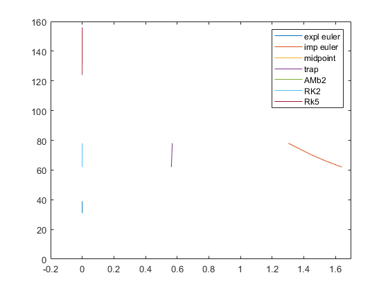
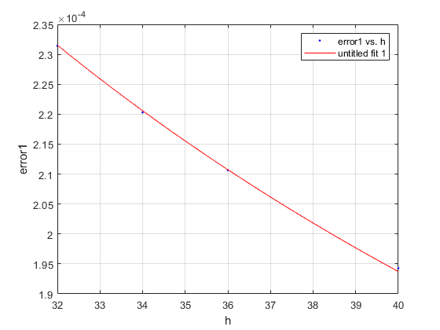
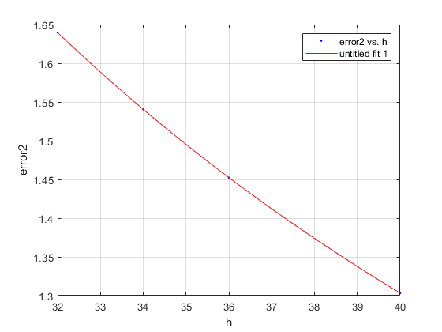
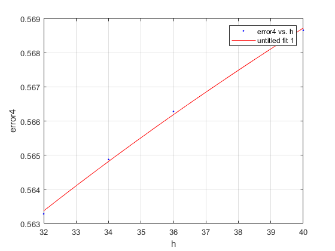
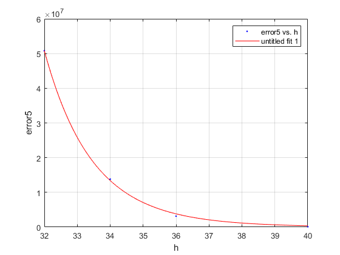
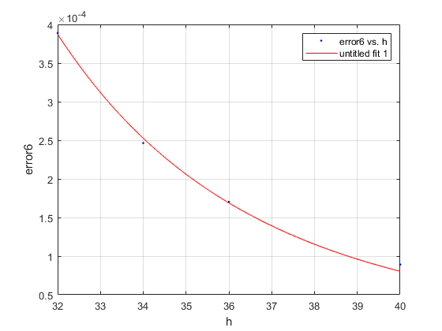
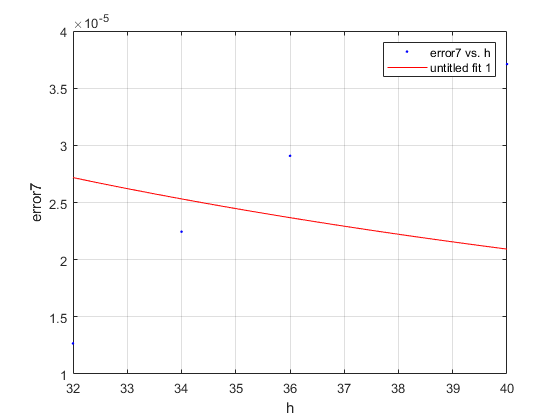
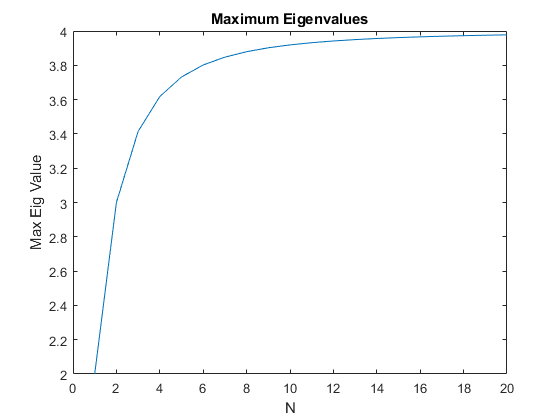

CFD Homework 2 - BRYAN ACOSTA
Contents
clear
clc
close all
Calculating Work & Alpha
x1 = linspace(0,1,30);
x2 = linspace(0,1,32);
x3 = linspace(0,1,34);
x4 = linspace(0,1,36);
x5 = linspace(0,1,38);
x6 = linspace(0,1,40);
h = [32 , 34, 36, 40];
global counter
diffequation=@(x,y) -50*(y - cos(x));
EXACT ODE VS EXPLICIT EULER
countervec1 = (linspace(1,4,4)).*0; error1 = (linspace(1,4,4)).*0; [exactval,~] = exact_solution(diffequation,x2); [estval,counter] = Explicit_Euler(x2); input = abs(exactval(end) - estval(end)); countervec1(1) = counter; error1(1) = input; [exactval,~] = exact_solution(diffequation,x3); [estval,counter] = Explicit_Euler(x3); input = abs(exactval(end) - estval(end)); countervec1(2) = counter; error1(2) = input; [eactval,~] = exact_solution(diffequation,x4); [estval,counter] = Explicit_Euler(x4); input = abs(exactval(end) - estval(end)); countervec1(3) = counter; error1(3) = input; [exactval,~] = exact_solution(diffequation,x6); [estval,counter] = Explicit_Euler(x6); input = abs(exactval(end) - estval(end)); countervec1(4) = counter; error1(4) = input;
EXACT ODE VS IMPLICIT EULER
countervec2 = (linspace(1,4,4)).*0; error2 = (linspace(1,4,4)).*0; [exactval,~] = exact_solution(diffequation,x2); [estval,counter] = Implicit_Euler(x2); input = abs(exactval(end) - estval(end)); countervec2(1) = counter; error2(1) = input; [exactval,~] = exact_solution(diffequation,x3); [estval,counter] = Implicit_Euler(x3); input = abs(exactval(end) - estval(end)); countervec2(2) = counter; error2(2) = input; [exactval,~] = exact_solution(diffequation,x4); [estval,counter] = Implicit_Euler(x4); input = abs(exactval(end) - estval(end)); countervec2(3) = counter; error2(3) = input; [exactval,~] = exact_solution(diffequation,x6); [estval,counter] = Implicit_Euler(x6); input = abs(exactval(end) - estval(end)); countervec2(4) = counter; error2(4) = input;
% EXACT ODE VS MIDPOINT METHOD
countervec3 = (linspace(1,4,4)).*0;
error3 = (linspace(1,4,4)).*0;
[exactval,~] = exact_solution(diffequation,x2);
[estval,counter] = Midpoint(x2);
input = abs(exactval(end) - estval(end));
countervec3(1) = counter;
error3(1) = input;
[exactval,~] = exact_solution(diffequation,x3);
[estval,counter] = Midpoint(x3);
input = abs(exactval(end) - estval(end));
countervec3(2) = counter;
error3(2) = input;
[exactval,~] = exact_solution(diffequation,x4);
[estval,counter] = Midpoint(x4);
input = abs(exactval(end) - estval(end));
countervec3(3) = counter;
error3(3) = input;
[exactval,~] = exact_solution(diffequation,x6);
[estval,counter] = Midpoint(x6);
input = abs(exactval(end) - estval(end));
countervec3(4) = counter;
error3(4) = input;
EXACT ODE VS TRAPEZOIDAL METHOD
countervec4 = (linspace(1,4,4)).*0; error4 = (linspace(1,4,4)).*0; [exactval,~] = exact_solution(diffequation,x2); [estval,counter] = trapezoidal(x2); input = abs(exactval(end) - estval(end)); countervec4(1) = counter; error4(1) = input; [exactval,~] = exact_solution(diffequation,x3); [estval,counter] = trapezoidal(x3); input = abs(exactval(end) - estval(end)); countervec4(2) = counter; error4(2) = input; [exactval,~] = exact_solution(diffequation,x4); [estval,counter] = trapezoidal(x4); input = abs(exactval(end) - estval(end)); countervec4(3) = counter; error4(3) = input; [exactval,~] = exact_solution(diffequation,x6); [estval,counter] = trapezoidal(x6); input = abs(exactval(end) - estval(end)); countervec4(4) = counter; error4(4) = input;
EXACT ODE VS ADAMS-BASHFORTH2 METHOD
countervec5 = (linspace(1,4,4)).*0; error5 = (linspace(1,4,4)).*0; [exactval,~] = exact_solution(diffequation,x2); [estval,counter] = AdamsB2(x2); input = abs(exactval(end) - estval(end)); countervec5(1) = counter; error5(1) = input; [exactval,~] = exact_solution(diffequation,x3); [estval,counter] =AdamsB2(x3); input = abs(exactval(end) - estval(end)); countervec5(2) = counter; error5(2) = input; [exactval,~] = exact_solution(diffequation,x4); [estval,counter] = AdamsB2(x4); input = abs(exactval(end) - estval(end)); countervec5(3) = counter; error5(3) = input; [exactval,~] = exact_solution(diffequation,x6); [estval,counter] = AdamsB2(x6); input = abs(exactval(end) - estval(end)); countervec5(4) = counter; error5(4) = input;
EXACT ODE VS RUNGE-KUTTA 2 METHOD
countervec6 = (linspace(1,4,4)).*0; error6 = (linspace(1,4,4)).*0; [exactval,~] = exact_solution(diffequation,x2); [estval,counter] = RK2(x2); input = abs(exactval(end) - estval(end)); countervec6(1) = counter; error6(1) = input; [exactval,~] = exact_solution(diffequation,x3); [estval,counter] = RK2(x3); input = abs(exactval(end) - estval(end)); countervec6(2) = counter; error6(2) = input; [exactval,~] = exact_solution(diffequation,x4); [estval,counter] = RK2(x4); input = abs(exactval(end) - estval(end)); countervec6(3) = counter; error6(3) = input; [exactval,~] = exact_solution(diffequation,x6); [estval,counter] = RK2(x6); input = abs(exactval(end) - estval(end)); countervec6(4) = counter; error6(4) = input;
EXACT ODE VS RUNGE-KUTTA 4 METHOD
countervec7 = (linspace(1,4,4)).*0; error7 = (linspace(1,4,4)).*0; [exactval,~] = exact_solution(diffequation,x2); [estval,counter] = RK4(x2); input = abs(exactval(end) - estval(end)); countervec7(1) = counter; error7(1) = input; [exactval,~] = exact_solution(diffequation,x3); [estval,counter] = RK4(x3); input = abs(exactval(end) - estval(end)); countervec7(2) = counter; error7(2) = input; [exactval,~] = exact_solution(diffequation,x4); [estval,counter] = RK4(x4); input = abs(exactval(end) - estval(end)); countervec7(3) = counter; error7(3) = input; [exactval,~] = exact_solution(diffequation,x6); [estval,counter] = RK4(x6); input = abs(exactval(end) - estval(end)); countervec7(4) = counter; error7(4) = input;
% counting power figure(1) plot(error1,countervec1) %blue hold on plot(error2,countervec2) %red hold on plot(error3,countervec3) %yellow hold on plot(error4,countervec4) %purple hold on plot(error5,countervec5) %green hold on plot(error6,countervec6) %blue hold on plot(error7,countervec7) %darkred legend('expl euler','imp euler','midpoint','trap','AMb2','RK2','Rk5') xlim([-0.2 1.7]) ylim([0 160])
%{ This graph conveys the idea that the higher the h, the faster the the graph converges onto the exact solution. This shows that even though the solution requires a lot more work to be done for a calculation, in the end it is worth it because of how much faster it finishes. It also visualizes how much faster the more advanced methods like RK4 are than Explicit Euler. %}
num = 30; for i = 2:5 vec = linspace(0,1,num); powers = getpower(vec); fprintf('For size of num') disp(num) fprintf('Power with Eplicit Euler') disp(powers(i)) fprintf('Power with Implicit Euler') disp(powers(i)) fprintf('Power with Midpoint') disp(powers(i)) fprintf('Power with Trapezoid Euler') disp(powers(i)) fprintf('Power with Adams Bashforth Method') disp(powers(i)) fprintf('Power with RK2') disp(powers(i)) fprintf('Power with RK5') disp(powers(i)) num = num + 2; end
For size of num 30 Power with Eplicit Euler 29 Power with Implicit Euler 29 Power with Midpoint 29 Power with Trapezoid Euler 29 Power with Adams Bashforth Method 29 Power with RK2 29 Power with RK5 29 For size of num 32 Power with Eplicit Euler 62 Power with Implicit Euler 62 Power with Midpoint 62 Power with Trapezoid Euler 62 Power with Adams Bashforth Method 62 Power with RK2 62 Power with RK5 62 For size of num 34 Power with Eplicit Euler 66 Power with Implicit Euler 66 Power with Midpoint 66 Power with Trapezoid Euler 66 Power with Adams Bashforth Method 66 Power with RK2 66 Power with RK5 66 For size of num 36 Power with Eplicit Euler 70 Power with Implicit Euler 70 Power with Midpoint 70 Power with Trapezoid Euler 70 Power with Adams Bashforth Method 70 Power with RK2 70 Power with RK5 70
%For the Explicit Euler Method: %Alpha = -0.7989 %For the Implicit Euler Method %Alpha = -1.029 % For Midpoint. % ALPHA = -7.047 % Trapezoid Method. %ALPHA = 0.04238 %AdamsB2 Method %ALPHA = 21.99 %RK2 Method %ALPHA = -7.047 %RK4 Method %Alpha = -1.172 [xData, yData] = prepareCurveData( h, error1 ); ft = fittype( 'power1' ); opts = fitoptions( 'Method', 'NonlinearLeastSquares' ); opts.Display = 'Off'; opts.StartPoint = [0.0036911293190958 -0.798914698260166]; [fitresult, gof] = fit( xData, yData, ft, opts ); figure( 'Name', 'untitled fit 1' ); h_1 = plot( fitresult, xData, yData ); legend( h_1, 'error1 vs. h', 'untitled fit 1', 'Location', 'NorthEast', 'Interpreter', 'none' ); xlabel( 'h', 'Interpreter', 'none' ); ylabel( 'error1', 'Interpreter', 'none' ); grid on %For the Implicit Euler Method %Alpha = -1.029 [xData, yData] = prepareCurveData( h, error2 ); ft = fittype( 'power1' ); opts = fitoptions( 'Method', 'NonlinearLeastSquares' ); opts.Display = 'Off'; opts.StartPoint = [58.2972804846504 -1.03036117616061]; [fitresult, gof] = fit( xData, yData, ft, opts ); figure( 'Name', 'untitled fit 1' ); h_1 = plot( fitresult, xData, yData ); legend( h_1, 'error2 vs. h', 'untitled fit 1', 'Location', 'NorthEast', 'Interpreter', 'none' ); xlabel( 'h', 'Interpreter', 'none' ); ylabel( 'error2', 'Interpreter', 'none' ); grid on % For Midpoint. % ALPHA = -7.047 [xData, yData] = prepareCurveData( h, error3 ); ft = fittype( 'power1' ); opts = fitoptions( 'Method', 'NonlinearLeastSquares' ); opts.Display = 'Off'; opts.StartPoint = [16071999.4877197 -7.04748723927692]; [fitresult, gof] = fit( xData, yData, ft, opts ); figure( 'Name', 'untitled fit 1' ); h_1 = plot( fitresult, xData, yData ); legend( h_1, 'error3 vs. h', 'untitled fit 1', 'Location', 'NorthEast', 'Interpreter', 'none' ); xlabel( 'h', 'Interpreter', 'none' ); ylabel( 'error3', 'Interpreter', 'none' ); grid on % Trapezoid Method. %ALPHA = 0.04238 [xData, yData] = prepareCurveData( h, error4 ); ft = fittype( 'power1' ); opts = fitoptions( 'Method', 'NonlinearLeastSquares' ); opts.Display = 'Off'; opts.StartPoint = [0.48239321237515 0.0447063789106446]; [fitresult, gof] = fit( xData, yData, ft, opts ); figure( 'Name', 'untitled fit 1' ); h_1 = plot( fitresult, xData, yData ); legend( h_1, 'error4 vs. h', 'untitled fit 1', 'Location', 'NorthEast', 'Interpreter', 'none' ); xlabel( 'h', 'Interpreter', 'none' ); ylabel( 'error4', 'Interpreter', 'none' ); grid on %AdamsB2 Method %ALPHA = 21.99 [xData, yData] = prepareCurveData( h, error5 ); ft = fittype( 'power1' ); opts = fitoptions( 'Method', 'NonlinearLeastSquares' ); opts.Display = 'Off'; opts.StartPoint = [2.43119566493717e+44 -24.3901265610395]; [fitresult, gof] = fit( xData, yData, ft, opts ); figure( 'Name', 'untitled fit 1' ); h_1 = plot( fitresult, xData, yData ); legend( h_1, 'error5 vs. h', 'untitled fit 1', 'Location', 'NorthEast', 'Interpreter', 'none' ); xlabel( 'h', 'Interpreter', 'none' ); ylabel( 'error5', 'Interpreter', 'none' ); grid on %RK2 Method %ALPHA = -7.047 [xData, yData] = prepareCurveData( h, error6 ); ft = fittype( 'power1' ); opts = fitoptions( 'Method', 'NonlinearLeastSquares' ); opts.Display = 'Off'; opts.StartPoint = [16071999.4877197 -7.04748723927692]; [fitresult, gof] = fit( xData, yData, ft, opts ); figure( 'Name', 'untitled fit 1' ); h_1 = plot( fitresult, xData, yData ); legend( h_1, 'error6 vs. h', 'untitled fit 1', 'Location', 'NorthEast', 'Interpreter', 'none' ); xlabel( 'h', 'Interpreter', 'none' ); ylabel( 'error6', 'Interpreter', 'none' ); grid on %RK4 Method %Alpha = -1.172 [xData, yData] = prepareCurveData( h, error7 ); ft = fittype( 'power1' ); opts = fitoptions( 'Method', 'NonlinearLeastSquares' ); opts.Display = 'Off'; opts.StartPoint = [1.10625849955209 -1.17162968027378]; [fitresult, gof] = fit( xData, yData, ft, opts ); figure( 'Name', 'untitled fit 1' ); h_1 = plot( fitresult, xData, yData ); legend( h_1, 'error7 vs. h', 'untitled fit 1', 'Location', 'NorthEast', 'Interpreter', 'none' ); xlabel( 'h', 'Interpreter', 'none' ); ylabel( 'error7', 'Interpreter', 'none' ); grid on %{ For the Explicit Euler Method: Alpha = -0.7989 For the Implicit Euler Method: Alpha = -1.029 For Midpoint: ALPHA = -7.047 Trapezoid Method: ALPHA = 0.04238 AdamsB2 Method: ALPHA = 21.99 RK2 Method: ALPHA = -7.047 RK4 Method: Alpha = -1.172 %}     
Question 2:
eig = zeros(length(i),1); for i = 1:20 eig(i) = max(abs(lambda((1:i)',i))); end plot(1:20, eig) title('Maximum Eigenvalues') ylabel('Max Eig Value') xlabel('N') eigen_values = (lambda((1:10)',10))'; disp(eigen_values) %{ The amount of Eigen Values is linear to the amount of N the function has, making this plot. This graph shows that how the eigenvalues approach 4 as N goes to infinity. %}
Columns 1 through 7 -0.0810 -0.3175 -0.6903 -1.1692 -1.7154 -2.2846 -2.8308 Columns 8 through 10 -3.3097 -3.6825 -3.9190
function [y,counter] = exact_solution(diffeq, xspan) [~, y] = ode45(diffeq,xspan, 0); counter = 1; end function [output,counter] = solve_equation(xval, yval, counter) counter = counter +1; diffequation=@(x,y) -50*(y - cos(x)); output = diffequation(xval,yval); end function [output,counter] = Explicit_Euler(xspan) counter = 0; jump = xspan(2); output = xspan.*0; for i = 1: (length(xspan)-1) [soln, counter] = solve_equation(xspan(i), output(i),counter); output(i+1) = output(i) + jump*soln; end end function [output,counter] =Implicit_Euler(xspan) counter = 0; jump = xspan(2); misc = xspan.*0; output = xspan.*0; for i = 1: (length(xspan)-1) [soln, counter] = solve_equation(xspan(i), misc(i),counter); misc(i+1) = misc(i) + soln*jump; [soln2, counter] = solve_equation(xspan(i+1), misc(i+1),counter); output(i+1) = output(i)+ jump*soln2 ; end end function [output,counter] =Midpoint(xspan) counter = 0; jump = xspan(2); halfjump = jump/2; output = xspan.*0; for i = 1: (length(xspan)-1) [soln, counter] =solve_equation(xspan(i),output(i),counter); [soln, counter] = solve_equation(xspan(i)+halfjump,output(i)+halfjump*soln,counter); output(i+1) = output(i) + jump*soln; end end function [output,counter] =trapezoidal(xspan) counter = 0; jump = xspan(2); halfjump = jump/2; output = xspan.*0; for i = 1: (length(xspan)-1) [soln, counter] = solve_equation(xspan(i), output(i),counter); [soln2, counter] = solve_equation(xspan(i+1), output(i+1),counter); output(i+1) = output(i)+ halfjump*(soln+soln2 ); end end function [output,counter] =AdamsB2( xspan) counter = 0; jump = xspan(2); output = xspan.*0; for i = 1: (length(xspan)-2) [misc,counter] = solve_equation(xspan(i+1), output(i+1),counter); [misc2,counter]= solve_equation(xspan(i),output(i),counter); output(i+2) = output(i+1) + 0.5*jump*(3*misc-misc2); end end function [output,counter] = RK2( xspan) counter = 0; jump = xspan(2); output = xspan.*0; for i = 1: (length(xspan)-1) input1 = xspan(i)+ 0.5*jump; [misc,counter] = solve_equation(xspan(i),output(i),counter); input2 = output(i)+(0.5*jump*misc); [misc,counter] = solve_equation(input1,input2,counter); output(i+1) = output(i) + jump*misc; end end function [output,counter] = RK4(xspan) counter = 0; jump = xspan(2); halfjump = jump/2; output = xspan.*0; for i = 1: (length(xspan)-1) [input1,counter] = solve_equation(xspan(i),output(i),counter); [input2,counter] = solve_equation(xspan(i)+ halfjump,output(i)+halfjump*input1,counter); [input3,counter] = solve_equation(xspan(i)+ halfjump,output(i)+halfjump*input2,counter); [input4,counter] = solve_equation(xspan(i)+ jump,output(i)+jump*input3,counter); output(i+1) = output(i) + jump*((1/6)*input1+(2/6)*input2+(2/6)*input3+(1/6)*input4); end end function [countervec] = getpower(xspan) diffequation=@(x,y) -50*(y - cos(x)); countervec = (linspace(1,8,8)).*0; [~,counter] = exact_solution(diffequation,xspan); countervec(1) = counter; [~,counter] = Explicit_Euler(xspan); countervec(2) = counter; [~,counter] = Implicit_Euler(xspan); countervec(3) = counter; [~,counter] = Midpoint(xspan); countervec(4) = counter; [~,counter] = trapezoidal(xspan); countervec(5) = counter; [~,counter] = AdamsB2(xspan); countervec(6) = counter; [~,counter] = RK2(xspan); %just need M countervec(7) = counter; [~,counter] = RK4(xspan); countervec(8) = counter; end function lambda = lambda(x,y) lambda = -2*(1-cos(pi*x/(y+1))); return end